Tích hợp ChatGPT vào Bot
DEMO: https://m.me/ahachatdemo?ref=ahagpt
Trong bối cảnh kinh doanh đang phát triển nhanh chóng, việc có một chiến lược thành công là rất quan trọng để thành công và AI trong tiếp thị đang nhanh chóng trở thành một phần quan trọng trong đó.
Giờ đây, với việc ChatGPT đang dẫn đầu về AI, không có gì lạ khi ngày càng có nhiều doanh nghiệp tìm cách tận dụng công nghệ tiên tiến này. Đã đến lúc đi trước đón đầu và học cách sử dụng các công cụ như ChatGPT và AhaChat để thúc đẩy chiến lược tiếp thị của bạn.
Là một nhà chiến lược tiếp thị hoặc người ra quyết định, điều quan trọng là luôn cập nhật các công nghệ và xu hướng mới nhất trong ngành. Bằng cách tìm hiểu cách sử dụng ChatGPT để tiếp thị và khắc phục những hạn chế của ChatGPT, bạn sẽ tạo ra một chiến lược tiếp thị thành công giúp mang lại kết quả tốt đẹp cho doanh nghiệp của mình.
1. ChatGPT là gì?
ChatGPT là một chatbot trò chuyện được tích hợp trí tuệ nhân tạo (AI) do công ty khởi nghiệp OpenAI của Mỹ xây dựng dựa trên công nghệ xử lý ngôn ngữ tự nhiên mới nhất có tên là Generative Pre-training Transformer (GPT). Mục tiêu cuối cùng của công nghệ này là cho phép người dùng tương tác với chatbot bằng ngôn ngữ tự nhiên sau đó chatbot sẽ đưa ra phản hồi được cho là chính xác nhất với câu hỏi của người dùng bằng văn bản.
Với sự hiểu biết sâu sắc về ngôn ngữ và khả năng xử lý lượng dữ liệu lớn, Chat GPT có thể xây dựng toàn bộ chiến dịch tiếp thị, một công cụ thay đổi hoàn toàn cuộc chơi để tiến hành nghiên cứu, phân tích dữ liệu và viết nội dung.
2. Lợi ích của ChatGPT trong marketing?
Là một nhà tiếp thị, bạn không ngừng tìm kiếm những cách thức mới và sáng tạo để mang lại kết quả cho doanh nghiệp của mình. Trong thế giới phát triển nhanh ngày nay, người tiêu dùng mong đợi trải nghiệm liền mạch và được cá nhân hóa, điều chỉ có thể đạt được thông qua các công nghệ tiên tiến như AI.
Đó là lúc ChatGPT và AhaChat xuất hiện để giúp bạn tăng cường nỗ lực tiếp thị của mình.
Trả lời hầu hết các câu hỏi một cách cụ thể
ChatGPT có thể trả lời về nhiều chủ đề khác nhau như khoa học toán học văn học cho đến các vấn đề về ngôn ngữ lập trình và phát triển ứng dụng...Cách sử dụng phổ biến của ChatGPT là đặt câu hỏi nó sẽ trả lời tất cả các câu hỏi với độ chính xác cao nhất. Tuy nhiên có những lúc nó cũng chưa thể thoả mãn được mục tiêu của người dùng.
ChatGPT cũng giúp sửa ngữ pháp và chính tả đồng thời đưa ra các hướng dẫn cho nhiều nhiệm vụ và hoạt động khác nhau chẳng hạn như nó có thể hướng dẫn cho bạn biết cách cài đặt các thiết bị văn phòng và gợi ý lựa chọn nghề nghiệp tùy thuộc vào kỹ năng, sở thích mà bạn cung cấp cho nó.
Nó không được tạo ra để thay thế cho công cụ tìm kiếm của Google và đôi khi ChatGPT cũng đưa ra các câu trả lời khác nhau trong cùng câu hỏi.
Sáng tạo nội dung
Một trong những nhiệm vụ lớn nhất đối với các nhà tiếp thị là tạo nội dung. Làm thế nào họ có thể thu hút sự chú ý của người tiêu dùng? Các xu hướng quan trọng nhất là gì? Hoặc tốt hơn, làm thế nào họ có thể tạo ra một xu hướng?
Mặc dù cần một nhà tiếp thị giỏi để bắt nhịp chính xác về văn hóa, nhưng ChatGPT chắc chắn có thể giúp việc tạo nội dung trở nên mượt mà hơn. ChatGPT có thể viết mô tả sản phẩm, tiêu đề, bài đăng trên blog, kêu gọi hành động và nội dung bằng văn bản khác và làm cho nội dung giống như con người.
Các nhà tiếp thị có thể tạo nội dung hấp dẫn trong một khoảng thời gian ngắn với sự hỗ trợ của ChatGPT, bao gồm:
- Bài đăng trên blog: Các nhà tiếp thị có thể nhập từ khóa và các yêu cầu cụ thể vào ChatGPT và mô hình AI sẽ tạo nội dung gốc, chất lượng cao, thân thiện với SEO và hấp dẫn đối tượng mục tiêu.
- Bài đăng trên mạng xã hội: ChatGPT có thể tạo các bài đăng trên mạng xã hội cho nhiều nền tảng khác nhau, bao gồm Facebook, Instagram và Zalo. Công nghệ AI sẽ tìm kiếm cơ sở dữ liệu của nó để tìm các từ thịnh hành và tối ưu hóa các chú thích ngắn, vui nhộn hoặc chú thích kiểu blog cho người dùng.
Dịch vụ khách hàng
ChatGPT là một tài nguyên tuyệt vời để cung cấp dịch vụ hỗ trợ khách hàng 24/7, vì vậy các trang web thương mại điện tử, mạng xã hội của bạn có sẵn hỗ trợ cho người tiêu dùng bất kể múi giờ hay nhu cầu mua sắm nào của họ. Đào tạo ChatGPT dưới dạng chatbot để trả lời các Câu hỏi thường gặp, yêu cầu hỗ trợ và nhiều nhu cầu khác như:
- Chatbot tự động: ChatGPT có thể xử lý các yêu cầu dịch vụ khách hàng đơn giản và thông thường, chẳng hạn như theo dõi đơn hàng, thông tin tài khoản và thông tin sản phẩm.
- Tự phục vụ: ChatGPT có thể cung cấp cho khách hàng các tùy chọn tự phục vụ để giải quyết các vấn đề của họ như giới thiệu đến Câu hỏi thường gặp, hướng dẫn và video.
- Hỗ trợ đa ngôn ngữ: Có thể khó tìm được các đại lý dịch vụ khách hàng nói được nhiều hơn một hoặc hai ngôn ngữ và khách hàng từ mọi thành phần đều cần được hỗ trợ. ChatGPT là đại diện dịch vụ khách hàng nói được nhiều ngôn ngữ, giúp các công ty phục vụ khách hàng trên toàn cầu dễ dàng hơn.
ChatGPT sẽ giúp tiết kiệm thời gian và nguồn lực vì AI có thể giúp các trang web hỗ trợ nhiều khách hàng hơn và cung cấp lao động rẻ hơn cho các công ty. Đổi lại, điều này giải phóng thời gian cho nhân viên tập trung vào những khách hàng có nhu cầu phức tạp hơn.
Mặc dù đây có vẻ không phải là một hình thức tiếp thị, nhưng việc nuôi dưỡng người tiêu dùng quay lại giúp đảm bảo rằng họ có trải nghiệm tích cực với thương hiệu của bạn.
3. Cách bạn có thể sử dụng ChatGPT
ChatGPT hiện tại đang miễn phí. Bạn cũng có thể truy cập ChatGPT trên Website chat.openai.com và tạo một tài khoản để sử dụng.
Ngoài ra AhaChat hỗ trợ tích hợp ChatGPT thông qua API Key
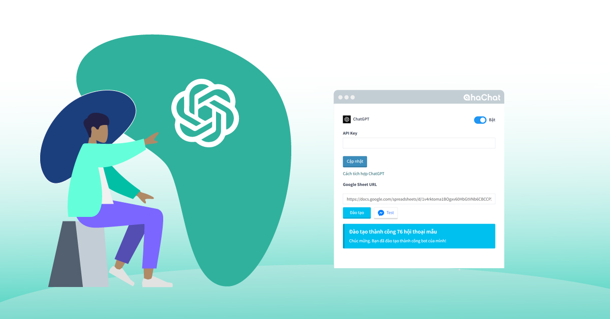
Những ưu điểm vượt trội của ChatGPT trên AhaChat:
- Không cần phải tạo Block trong kịch bản. Không cần phải cài đặt nhiều tham số. Chỉ cần bật và chạy vì tất cả những công việc khó đã được AhaChat xử lý ở hậu trường.
- Khi khách hàng đặt câu hỏi, bot sẽ ưu tiên tìm kiếm Câu trả lời từ kịch bản trả lời tự động. Nếu tìm không thấy thì bot sẽ gọi ChatGPT ra trả lời.
- Đạo tạo ở AhaChat rất thông minh, chỉ cần hơn 30 mẫu hội thoại trong file sheet là bot có thể diễn giải ra hơn 1000 cách trả lời chính xác.
- ChatGPT sẽ có khả năng tự quyết định sẽ gọi Kịch bản tự động hoặc câu trả lời được đào tạo khi nhận câu hỏi từ khách hàng.
Đây là ver 1.0 nên chỉ mới là phiên bản đầu tiên, những phiên bản sau AhaChat sẽ tiếp tục tinh chỉnh cá nhân hoá bot theo từng ngành nghề.
Hướng dẫn tích hợp ChatGPT vào AhaChat
Bước 1: Tạo API Key
Để tích hợp được ChatGPT trước tiên bạn cần phải có API Key
Truy cập https://platform.openai.com và đăng nhập bằng tài khoản của bạn sau đó di chuyển tới API keys → Create new secret key
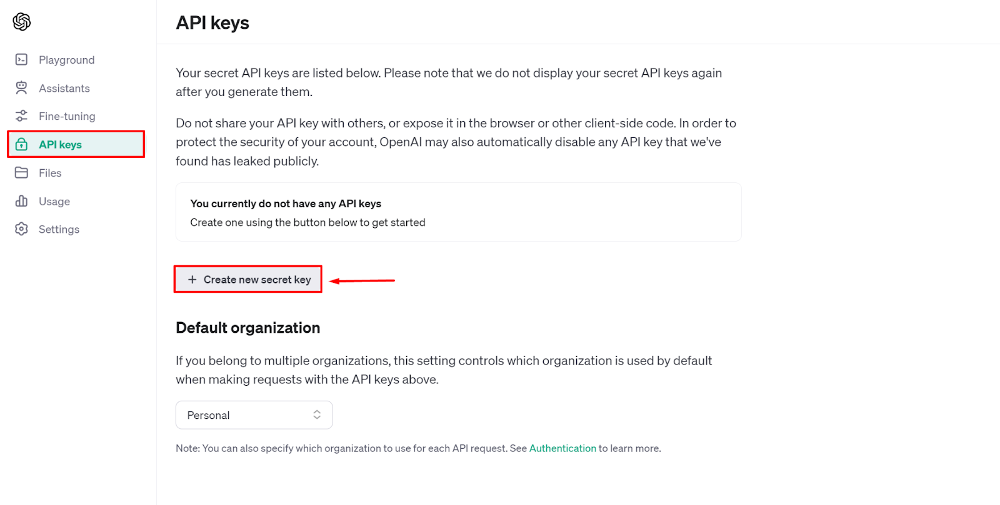
Đặt tên cho key xong bấm nút Create secret key
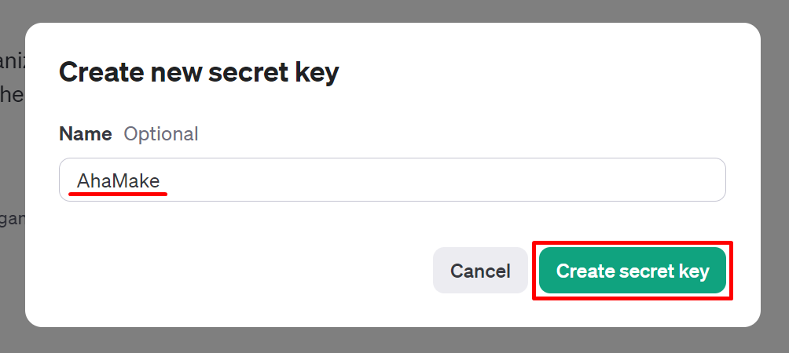
Bấm biểu tượng Copy để sao chép đoạn API Key mới tạo và lưu lại
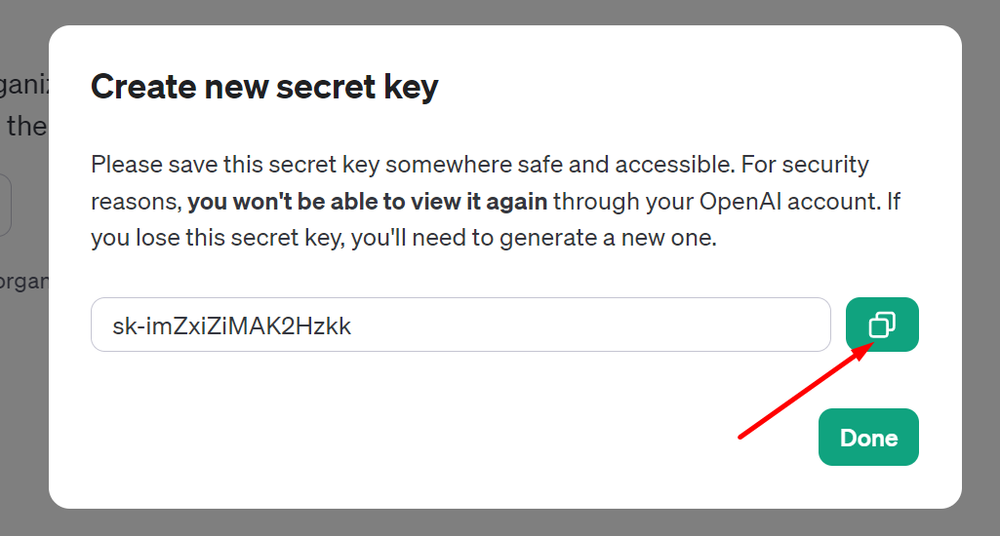
Bước 2: Tạo trợ lý OpenAI
Truy cập vào https://platform.openai.com và đăng nhập bằng tài khoản OpenAI của bạn
Di chuyển tới menu Assistants và bấm vào nút + Create
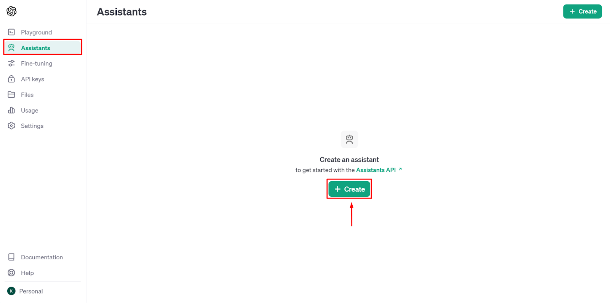
Đặt tên cho trợ lý, nhập hướng dẫn, chọn model và thêm file đào tạo cho trợ lý như ảnh bên dưới → sau đó bấm nút Save
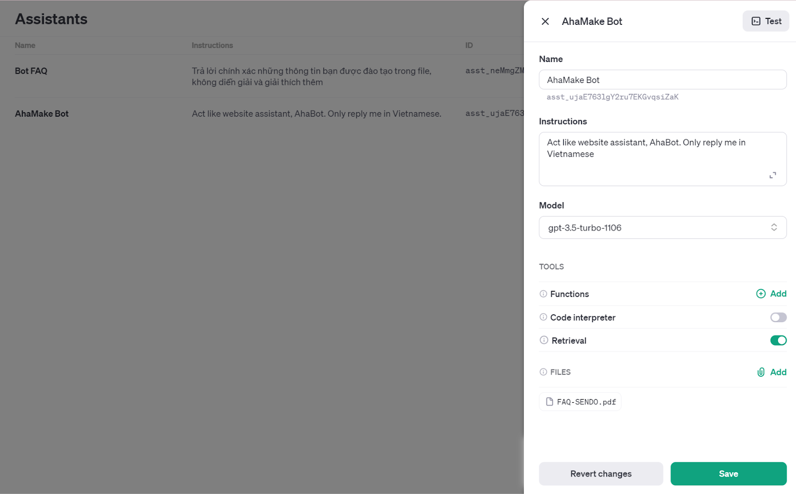
Instructions
Bạn có thể bổ sung các hướng dẫn cụ thể cho trợ lý của mình bằng cách sử dụng nội dung Instructions theo mẫu sau:
Act like website assistant, AhaBot. Only reply me in Vietnamese.
Độ dài tối đa là 32768 ký tự.
Model
Tham khảo tổng quan về mô hình của OpenAI để biết các khả năng và mức giá khác nhau của từng mô hình.
Để có thể sử dụng Model GPT-4 thì bạn cần nạp tín dụng vào tài khoản OpenAI của mình, tối thiểu $5. Không cần phải mua gói ChatGPT Plus
OpenAI đã hỗ trợ Add thẻ Visa của các ngân hàng tại Việt Nam.
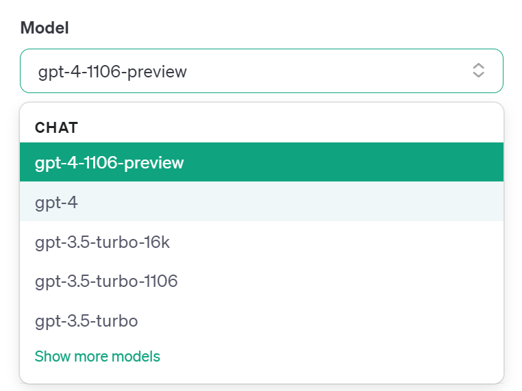
Retrieval
Việc truy xuất giúp trợ lý có được kiến thức từ các file mà bạn tải lên. Sau khi file được tải lên, trợ lý sẽ tự động quyết định thời điểm truy xuất nội dung dựa trên yêu cầu của người dùng.
Bạn có thể đào tạo cho trợ lý của mình bằng cách bật nút Retrieval và bấm vào tùy chọn Add bên dưới để thêm file .PDF chứa nội dung cần đào tạo lên.
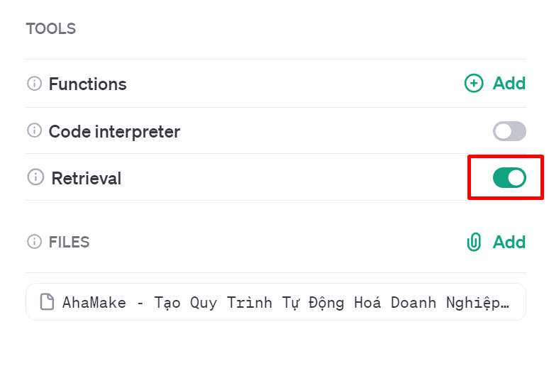
Vậy là bạn đã tạo xong trợ lý OpenAI, tới bước tiếp theo
Bước 2: Tích hợp ChatGPT vào AhaChat
Đăng ký tài khoản và tạo Chatbot tại ahachat.com
Trên giao diện AhaChat bạn chọn vào Cài đặt → Tích hợp
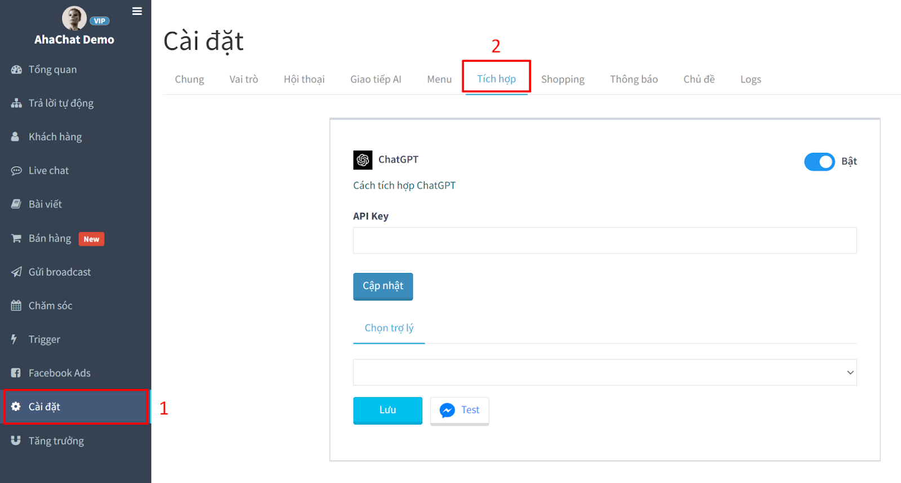
Dán API Key bạn đã tạo ở Bước 1 vào đây
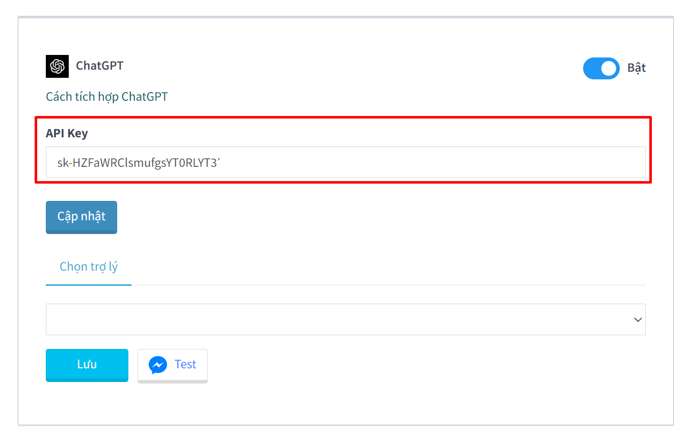
Chọn trợ lý xong bấm nút Lưu để hoàn tất quá trình tích hợp.
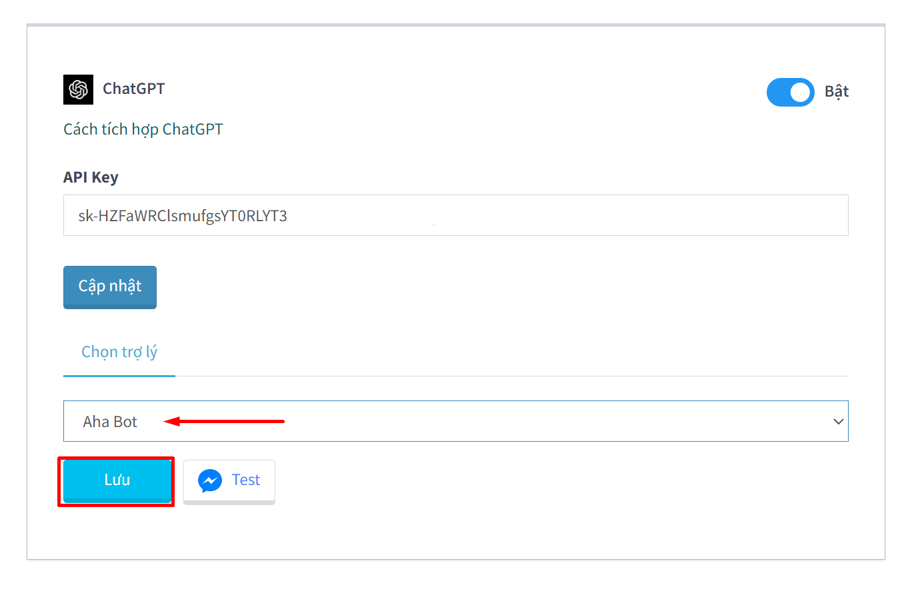
Note: Bạn có thể Bật/Tắt ChatGPT mọi lúc nếu không muốn sử dụng
Chúc bạn kinh doanh thành công với ChatGPT
Chúc bạn kinh doanh thành công với ChatGPT